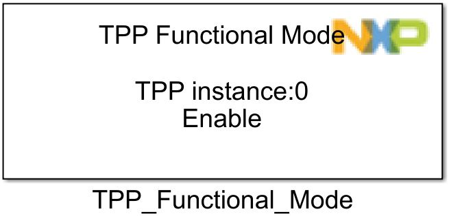
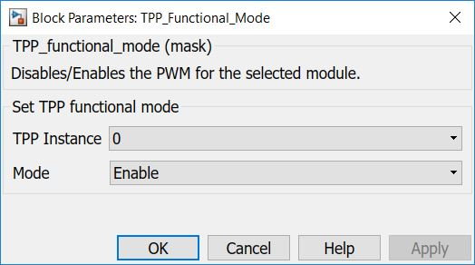

TPP Functional Mode Block
TPP Functional Mode performs software transition from one mode to another. The transition can be from a simple switch to low on Enable pins (for sleep) to a more complex one (for enable) where are made all the initialization steps.
Block Image
Inputs:
- None
Outputs:
- None
Parameters and Dialog Box
The block has two parameter:
Instance
Selects the TPP instance to be used.
Note:Currently limited to only 1 instace (#0).
Mode
Available operational modes of TPP integrated circuit.
Note: TPP available operational modes are:
- Sleep: When RSTB is low, the IC is in sleep mode. The current consumption of the IC is at minimum.
- Standby: The RSTB input is high while one of the enable inputs is low. The IC is fully biased and operating, all the external FETs are actively turned Off by both high-side and low-side gate drives. The IC is ready to enter the enable mode.
- Initialization: When EN1, EN2, and RSTB all go high, the device enters the Initialization mode. Toggling the LS and then the HS initializes the driver and normal operation, the Enable mode begins.
- Enable: After initialization is complete, the device goes into the enable mode and operates normally. Normal operation continues in this mode as long as both enable pins and RSTB are high.
- FaultProtection: Can be used during interrupt processing, when output stages are automatically turned off.
- Configure the TPP Configuration block.
- Configure the LPSPI Configuration block.
Block Dependency
Please do the following:
Block Miscellaneous Details
* Read Hardware Manual documentation to get more information (GD3000).